Pagina di test per diagrammi logici e temporali generati via codice.
Un multiplexer o una semplice rete di porte logiche disegnate con WaveDrom.
Fondamentale in elettronica digitale per visualizzare i cicli di clock.
Attenzione: WaveDrom serve esclusivamente per circuiti logici (reti digitali) e segnali di clock temporali. Non ha i simboli per l'elettronica analogica (Resistenze, Condensatori, Induttori).
Il metodo migliore per studiare l'elettronica analogica sul web è l'uso di simulatori integrati! Qui sotto c'è un circuito RLC perfettamente funzionante e interattivo generato da Falstad Circuit Simulator. (Prova a cliccare sull'interruttore!)
Questo circuito è stato generato in Python tramite schemdraw ed esportato come file SVG puro.
Dopodiché, tramite 2 semplici regole CSS, abbiamo applicato l'effetto bagliore Neon Cyberpunk!
